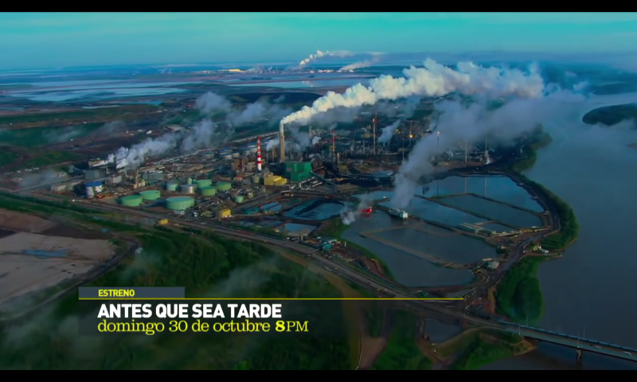
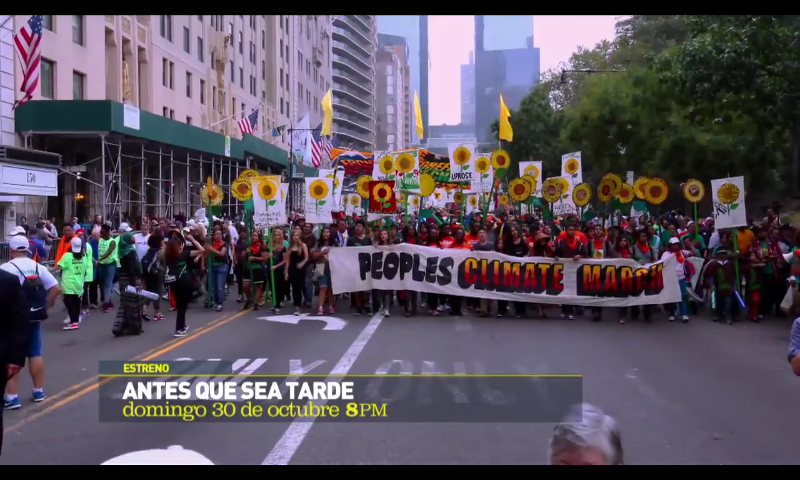
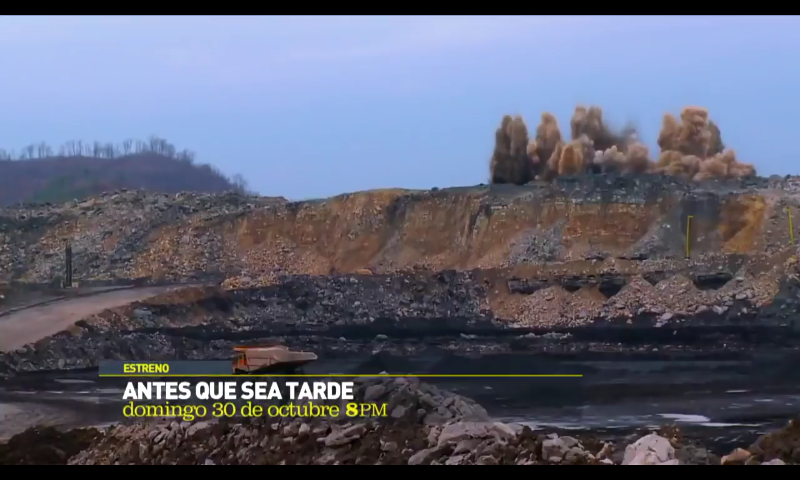
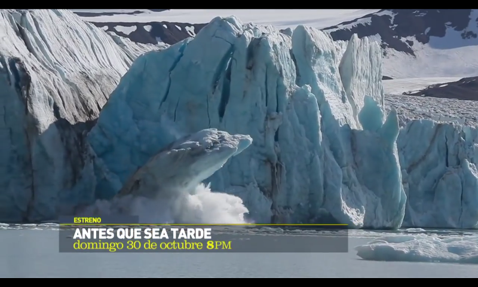
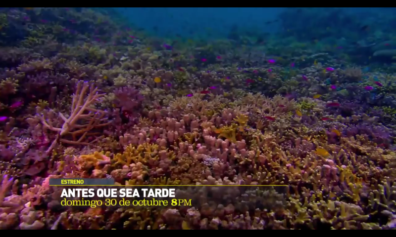
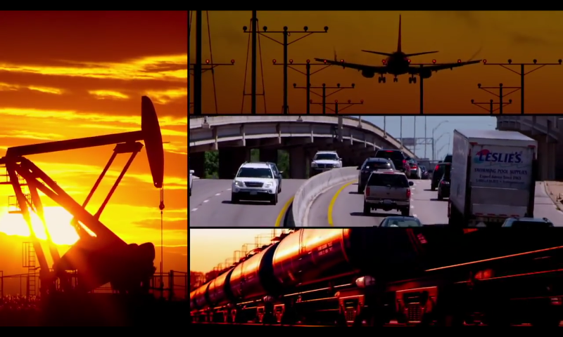
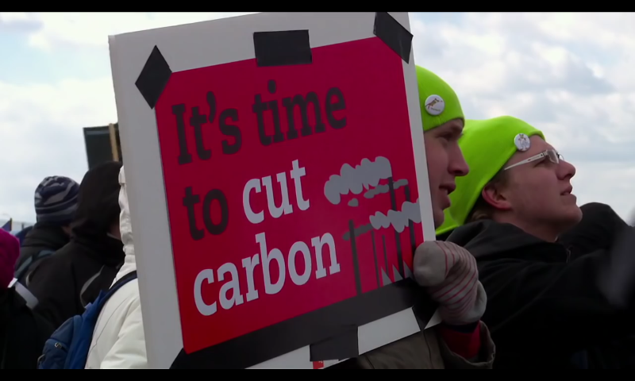
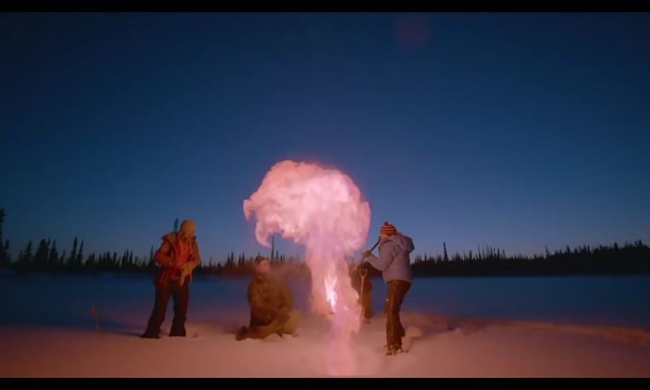
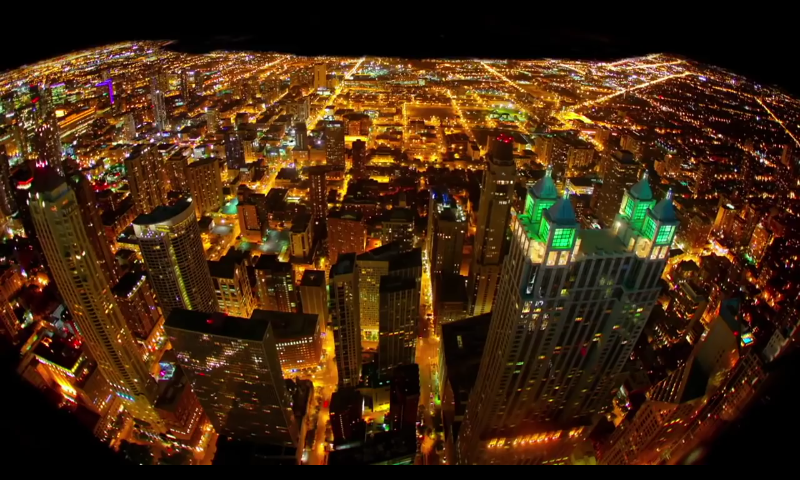

- descripción: La idea de cambio climático, en este marco, alude a una variación del clima del planeta Tierra generada por la acción del ser humano. Este cambio climático es producido por el proceso conocido como efecto invernadero, que provoca el llamado calentamiento global
- análisis: Es un documental orientado en el presente pero que alberga los temas relacionados con el pasado de este problema, ya que muestra los complots que tenían los gobiernos y las empresas que causaban el cambio climático para poder esparcir rumores de que es un mito el cambio climático y pagando a profesionales muy respetados para que apoyen a la causa y que así los empresarios puedan ganar sigue dinero a costa de la salud del medio ambiente y llegando a corromper tanto al gobierno que llego al punto de ser ilegal hablar del calentamiento global.
pasando por peores circunstancias que los que investigaban o divulgaban noticias del calentamiento global eran ridiculizados y amenazados de muerte, y aunque ahora estamos más conscientes de lo que está pasando, la desinformación siguen siendo un impedimento para poder hacerse cargo del problema
y si bien ahora no estamos sintiendo el cambio climático con mucha fuerza no falta mucho para que nos afecte a gran escala
nos estamos acercando la otra extinción masiva pero ahora es una artificial causada por el hombre, siempre fuimos responsables de algunas de las extinciones pero en esos tiempo teníamos la maldición de la ignorancia, pero ahora que tenemos la inteligencia y la capacidad de hacer algo lo ignoramos y preferimos pensar que nada está pasando
lo que los científicos predijeron está pasando y seguirá pasando a menos que hagamos algo al respecto
podemos crear fuentes de energía sustentable y renovable que sea 100% limpia pero si las grandes potencias no lo hacen no nos da mucha fe que en los países menos desarrollados se pueda combatir
la china supero en el nivel de contaminación a estados unidos pero ellos se dieron cuenta de su error y ahora están tomando las iniciativa para dejar de contaminar nos da un poco de esperanza
pero por otro lado los países menos desarrollados como la india o tienen más opción que quemar combustible fósil para poder cocinar o hacer cosas más básicas por ser fácil de conseguir y por lo tanto más barato, aunque la gente rica de ese lugar no se vea afectada por el cambio climático los más pobres si son afectados en grandes dimensiones, perdiendo sus cosechas por las sequias o las inundaciones
los polos se derriten lo cual aumenta la marea y a su vez el mar inunda las ciudades costearas de todo el mundo, las islas cada vez están mas inundadas y pierden territorio
aunque lo que más se produce es el CO2 lo que más contamina son los gases de invernadero. y aunque el mar puede lidiar con los problemas dl calentamiento global y reducirlo no puede hacerlo tan rápido nuestra contaminación es tan rápida y en tal cantidad que al mar no le da tiempo de regularlo
pero ahora la humanidad está más consciente de sus acto y aunque aún no hay leyes que prohíban la quema de combustibles fósiles estamos dando pequeños pasos para la extinción de los combustibles fósiles y estos nos dan más esperanza como el tratado de parís que incentiva a poner más concientización y a la regulación de estos gases de invernadero y del CO2 y tienen la validación de 194 países la pregunta es ¿ESTAMOS A TIEMPO? la contaminación ya empezó y las temperaturas cada vez suben más a tal punto que cada año que pasa se considera el año más caliente de la historia
AUN ESTAMOS A TIEMPO DE FRNAR EL CALENTAMIENTO GLOBAL Y QUE CON EL PASON DEL TIEMPO DESAPARESCA POR COMPLETO PERO NECESITAMOS HACER UN CAMBIO RADICAL Y NO LENTO TIENE QUE SER LO MAS DRASTICO POSIBLE SOLO NOS QUEDA ESPERAR QUE LOS GOBIERNOS CUMPLAN SU PALABRA Y QUE CUANDO TERMINEMOS DE CUMPLIR CON EL ACUERDO AUN ESTEMOS A TIEMPO.









links a paginas con informacion sobre el tema: aqui abajo
el calentamiento global de espencer weart
el calentamiento global de francisco carcia olmedo
calentamiento global al borde del limite de jose larios marton
cambios climaticos de martin chivelet
el clima el calentamiento global y el futuro del planeta de manuel toharia
noticias sobre el tema
.jpg)
.jpg)
.png)